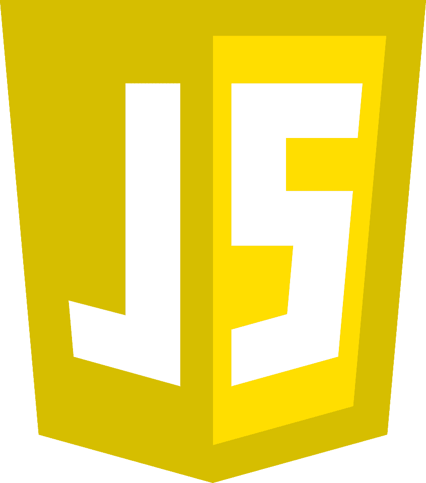
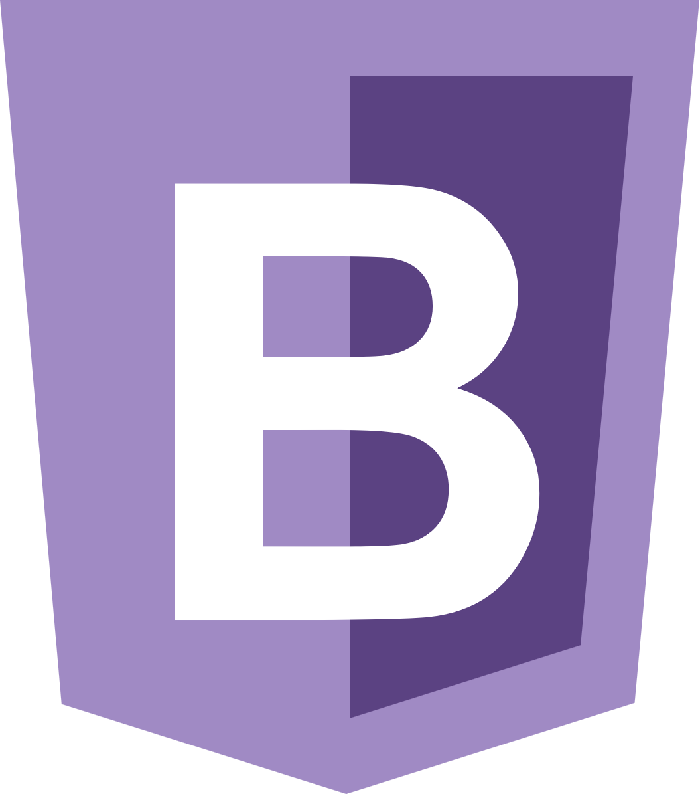
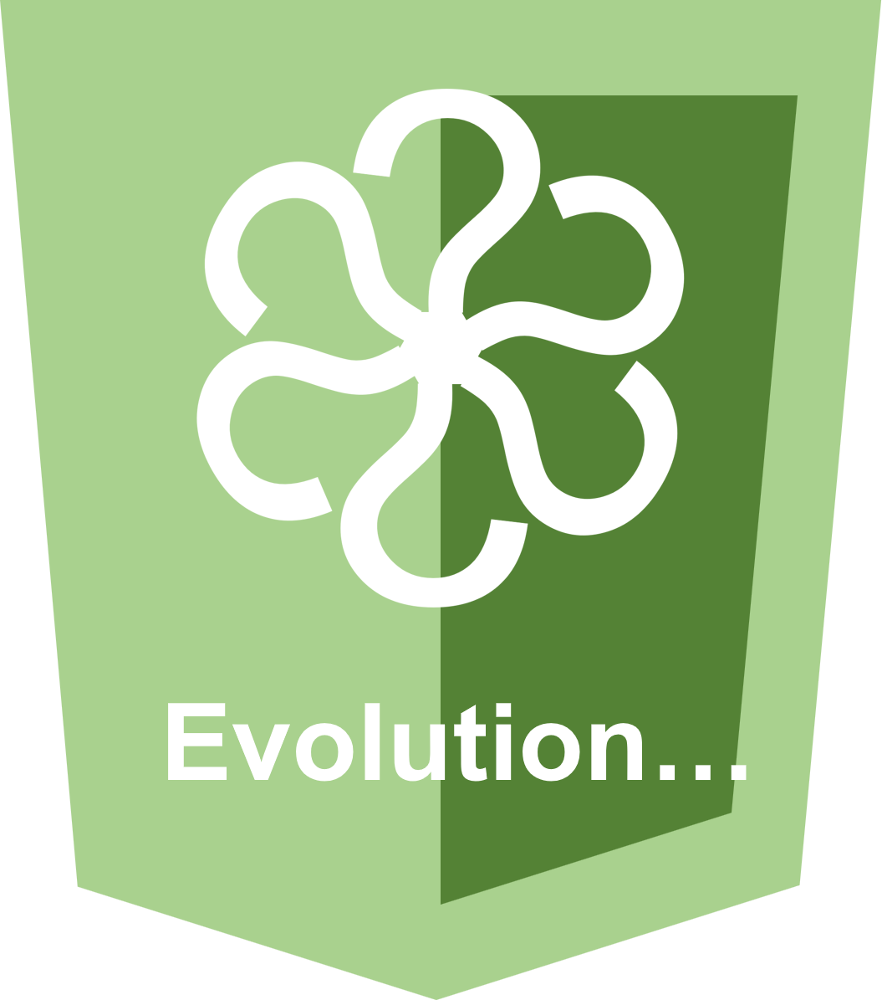

Développeur
fullstack
Je suis développeur fullstack et développeur d'application WEB REACT. Je conçois et réalise des sites WEB. J'adopte une gestion de projet agile afin d'améliorer le contrôle et la qualité des livrables finaux. Ainsi que la communication aussi bien dans l'équipe qu'avec le client, pour favoriser la réactivité en cas de changements ou d'ajout de nouvelles fonctionnalités.



Titres pro et certificats de réussite (MOOC)
En voir plus...